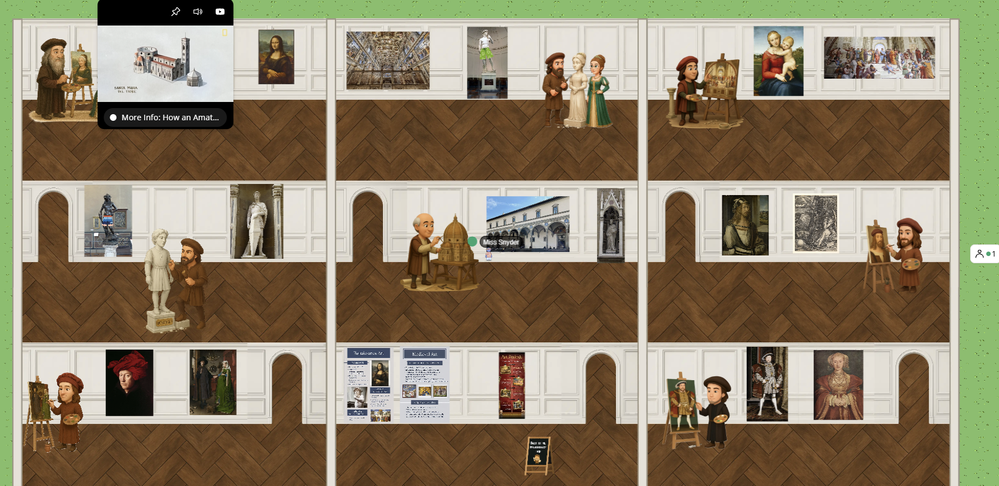
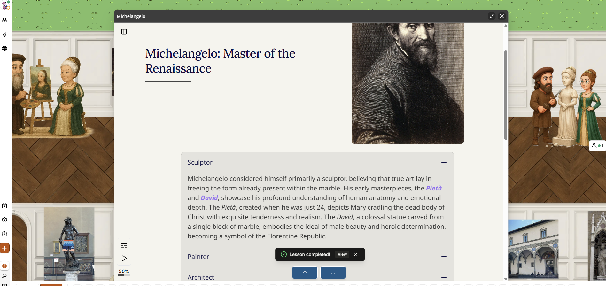

Renaissance Virtual Gallery
Supporting Artifacts


Project Description
The Renaissance Virtual Gallery was created as one component of a larger Renaissance Fair designed for middle school history students. This virtual experience focused specifically on Renaissance artists, their artwork, achievements, and artistic mediums. Using Topia, I designed a virtual gallery that allowed students to explore exhibits featuring influential Renaissance figures and their contributions to art and culture.
Rather than learning through a traditional lecture or worksheet, students were able to move through the gallery at their own pace and interact with exhibits throughout the space. The gallery included artwork, artist biographies, and additional information about important Renaissance achievements. My goal was to create an engaging learning experience that encouraged students to explore the content while experiencing a virtual art gallery environment. This project combined historical content, creativity, and technology to support student learning in a more interactive way.
Tools Used
| Tool | Purpose |
|---|---|
| Topia | Created the immersive virtual gallery environment. |
| Mindsmith | Developed instructional content and learning materials. |
| Canva | Designed graphics and visual learning resources. |
| AI Image Generation | Created custom Renaissance-inspired artwork and character images. |
Project Reflection
Creating the Renaissance Virtual Gallery reinforced my belief that students learn best when they can actively explore content rather than simply read about it. One of my favorite parts of this project was designing the gallery space and selecting the artwork and information that students would encounter as they moved through the exhibits. I also used AI-generated images to place my teaching partner and me within the gallery as Renaissance artwork. My teaching partner was featured as the Mona Lisa, while I was incorporated into a Michelangelo-inspired statue. The students thought this was hilarious and immediately became more invested in exploring the gallery.
This project gave me an opportunity to experiment with technology as a tool for creating more meaningful learning experiences. It reminded me that small creative touches can make learning more memorable and help students connect with content in unexpected ways. Seeing how excited students were to explore the gallery strengthened my interest in educational technology and immersive learning experiences.
The project description and reflection were created with assistance from ChatGPT.